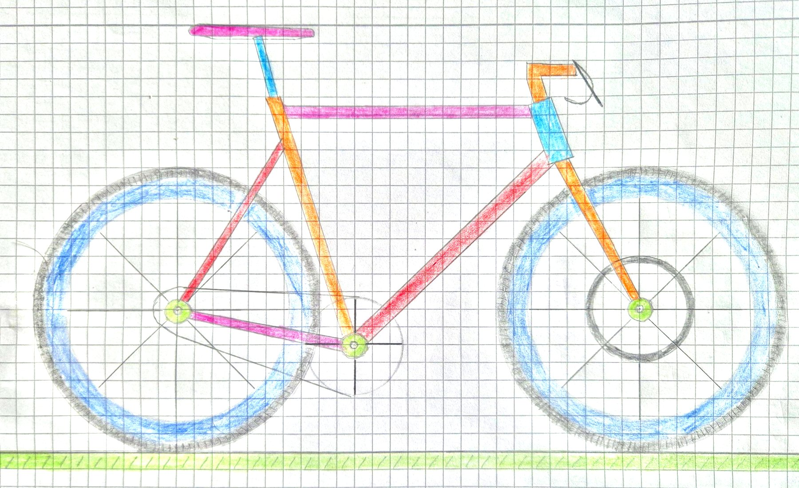
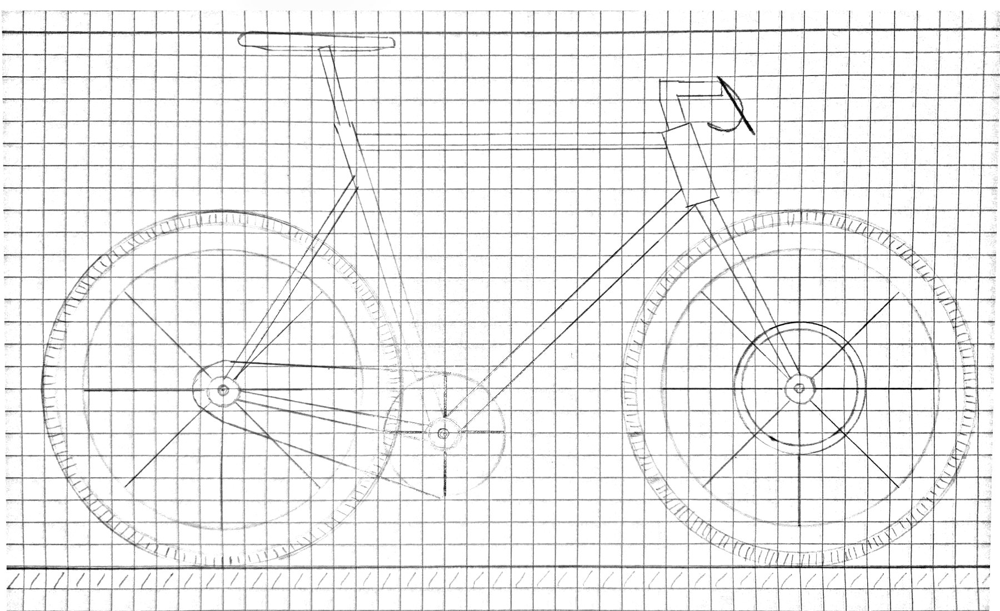

Die Zeichnung

- Vertices:
- –
- Dreiecke:
- –
- Indizes (count von drawElements):
- –
Legt das Foto der kolorierten Handskizze deckungsgleich über die WebGL-Zeichnung.
WebGL wird gestartet …
Vorlage: die kolorierte Skizze
Grundlage ist die Bleistiftskizze aus Aufgabe 2. Sie wurde von Hand mit Buntstiften koloriert: jedes Rahmenrohr in einer eigenen Farbe, blaue Felgen, schwarze Reifen, grüne Naben und ein Wiesenstreifen als Boden. Die WebGL-Zeichnung übernimmt diese Farbzuordnung Teil für Teil.

Farbpalette
Die Farbtöne wurden im Foto an den einzelnen Bauteilen gemessen. Weil das Papier die Buntstiftfarben im Foto blass wirken lässt, wurden Sättigung und Helligkeit angehoben; der Farbton bleibt erhalten. Für die Verläufe rechnet das Programm jede Farbe heller oder dunkler.
Umsetzung
Von Linien zu Dreiecken: Die Geometrie aus Aufgabe 2 bleibt, aber jedes Bauteil wird jetzt als Fläche aufgebaut. Dafür gibt es wenige Grundformen, die alle nur Dreiecke erzeugen:
| Grundform | Zerlegung | Verwendet für |
|---|---|---|
| Viereck | 2 Dreiecke | Himmel, Wiese, Speichen, Reifenprofil, Kettenglieder |
| Rohr | 4 Längsstreifen = 6 Dreiecke, Farben dunkel – mittel – hell – mittel quer zum Rohr | alle Rahmenrohre, Sattelstütze, Vorbau, Kurbel |
| Scheibe | Fächer: Mittelpunkt + n Randpunkte = n Dreiecke | Naben, Schatten (außen transparent) |
| Ring | Streifen zwischen zwei Kreisen = 2n Dreiecke | Reifen, Felgen, Bremsscheibe |
| Kontur-Fächer | Fächer vom Mittelpunkt zu jedem Konturpunkt | Sattel (Spline), Ritzel und Kettenblatt (Zähne), Pedal |
| Streifen | Polygonzug mit Breite: 2 Dreiecke pro Abschnitt | Lenker, Bremshebel, Bremsleitung |
Farben pro Vertex: Jeder Vertex bekommt neben seiner Position eine Farbe (RGBA). Der Vertex-Shader gibt sie als varying weiter, die Grafikkarte interpoliert sie über jedes Dreieck. Haben alle drei Ecken dieselbe Farbe, entsteht eine einfarbige Fläche, sonst ein Verlauf. Der Schalter „Farbverläufe“ tauscht den Farbpuffer gegen einen zweiten, in dem jede Ecke die Grundfarbe ihres Bauteils trägt – Geometrie und Indizes bleiben gleich.
attribute vec4 aColor; // Farbe dieser Ecke
varying vec4 vColor; // wird über das Dreieck interpoliert
void main() { …; vColor = aColor; }
// Fragment-Shader: gl_FragColor = vColor;Ein Draw-Call für alles: Alle Bauteile liegen hintereinander in drei Arrays. drawElements zeichnet die Dreiecke in der Reihenfolge der Indizes – deshalb wird von hinten nach vorn aufgebaut: Himmel, Wiese, Schatten, Laufräder, Kette und Kettenblatt, Rahmen, Cockpit, Kurbel, zuletzt die grünen Naben. Was später kommt, liegt oben; ein Tiefenpuffer ist nicht nötig. Für die halbtransparenten Schatten ist Alpha-Blending eingeschaltet.
gl.vertexAttribPointer(aPosition, 2, gl.FLOAT, false, 0, 0); // 2 Werte je Vertex
gl.vertexAttribPointer(aColor, 4, gl.FLOAT, false, 0, 0); // 4 Werte je Vertex
gl.drawElements(gl.TRIANGLES, indices.length, gl.UNSIGNED_SHORT, 0);Passen die Arrays zusammen?
Bevor gezeichnet wird, prüft das Programm die Längen. Stimmt etwas nicht, erscheint eine Fehlermeldung statt einer fehlerhaften Zeichnung.
| Array | Länge | Bedingung |
|---|---|---|
positions (Float32Array) | – | 2 Werte je Vertex · – Vertices |
colors (Float32Array) | – | 4 Werte (RGBA) je Vertex |
indices (Uint16Array) | – | 3 Indizes je Dreieck · – Dreiecke = count von drawElements |
| größter Index | – | muss kleiner als die Zahl der Vertices sein |
Dreiecksnetz: Der Schalter „Dreiecksnetz zeigen“ zeichnet zusätzlich die Kanten aller Dreiecke. Er dient nur der Kontrolle; die Zeichnung selbst besteht ausschließlich aus Dreiecken.
Alle Flächen
| Gruppe | Bauteil | Aufbau | Vertices | Dreiecke |
|---|---|---|---|---|
| Summe | – | – | ||
Bedienung
- Farbverläufe an: Farben werden über die Dreiecke interpoliert. Aus: jede Fläche einfarbig in ihrer Grundfarbe.
- Dreiecksnetz zeigen: macht die Zerlegung in Dreiecke sichtbar.
- Kolorierte Skizze überlagern: legt das Foto der Vorlage über die Zeichnung zum Vergleich.
- Dunkles Design oben rechts: Seite und Himmel werden dunkel, die Farben des Rades bleiben.
Barrierefreiheit
- Textalternative
- Das Canvas trägt
role="img"und eine Beschreibung mit allen Farben. Alle Flächen und die Palette stehen zusätzlich als Tabelle bzw. Liste auf der Seite (1.1.1, 1.3.1). - Kontrast und Farbe
- Texte erreichen in beiden Designs mindestens 4,5:1. Farben der Palette werden immer auch mit Namen und Hex-Wert genannt (1.4.1, 1.4.3).
- Bedienung
- Alle Schalter sind normale Checkboxen bzw. ein Switch, mit Tastatur erreichbar, mit sichtbarem Fokus. Änderungen werden über eine Statusmeldung angesagt (2.1.1, 2.4.7, 4.1.3).
- Zoom und Bewegung
- Keine Animation. Das Layout funktioniert bis 320 px Breite, breite Tabellen scrollen in sich (1.4.10).
Test und Qualitätssicherung
Getestet in Chrome unter macOS in beiden Designs: alle drei Schalter einzeln und kombiniert, Wechsel des Designs bei eingeschalteten Schaltern, verschiedene Fenstergrößen. Die Längen der Arrays werden bei jedem Aufbau geprüft, nach dem Zeichnen zusätzlich gl.getError(). Die Konsole (Cmd+Alt+J) zeigt nur eine Info-Meldung mit Dreiecken, Vertices und Indizes, keine Fehler. Mit „Kolorierte Skizze überlagern“ wurde geprüft, dass Flächen und Farben der Vorlage entsprechen.
Quellen
- Skizze, Kolorierung, Geometrie und Code: selbst erstellt. Die Geometrie stammt aus der eigenen Lösung zu Aufgabe 2; die Fotos der Skizzen wurden perspektivisch entzerrt, die kolorierte Skizze zusätzlich in der Sättigung angehoben.
- Schrift: Bricolage Grotesque, Mathieu Triay, SIL Open Font License, über Google Fonts.
- Referenzen: MDN: drawElements(), MDN: Using shaders to apply color in WebGL, MDN: blendFunc(), Wikipedia: Gouraud Shading.